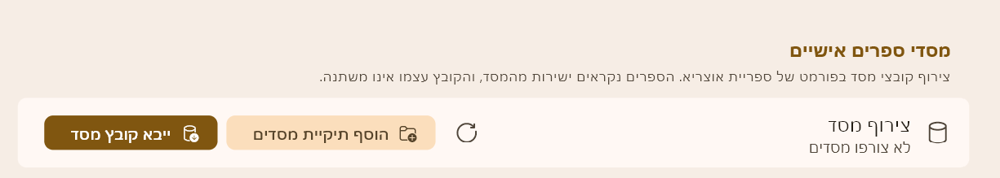
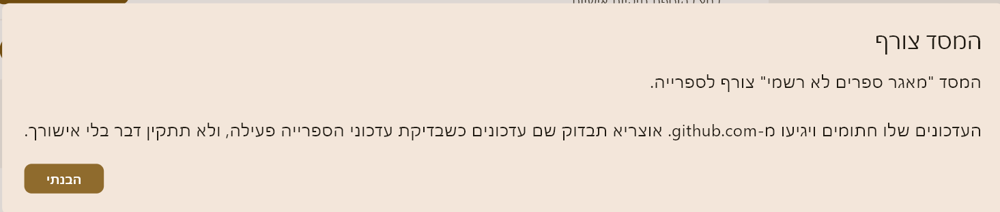
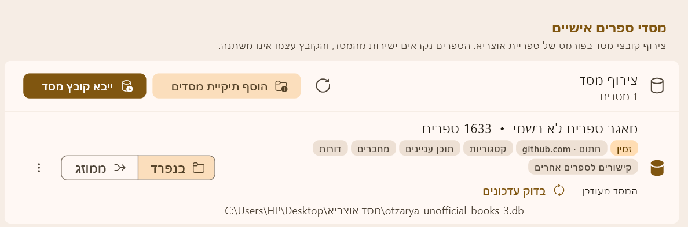
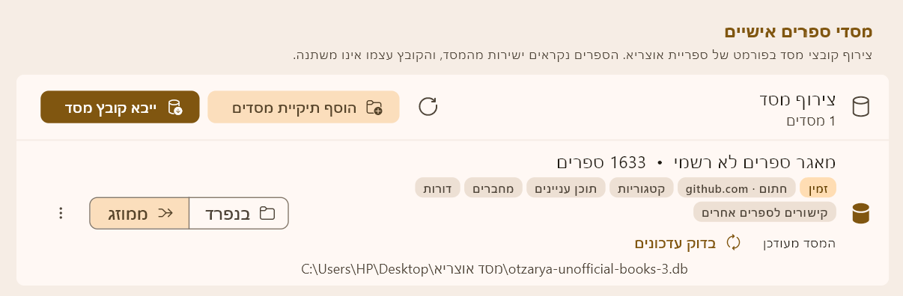
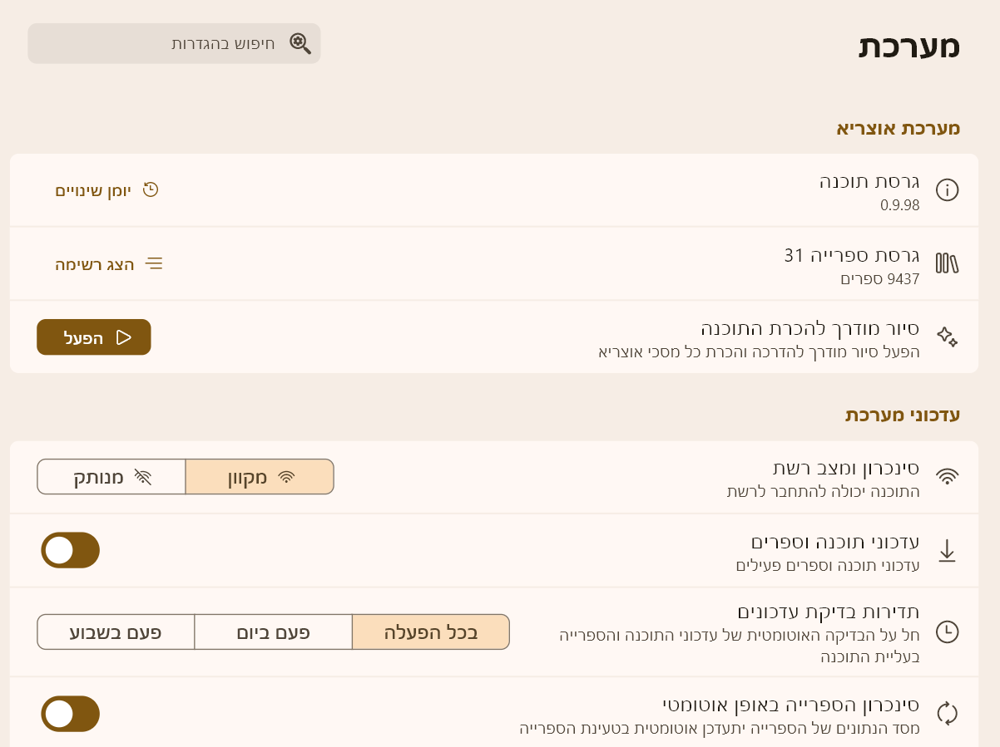
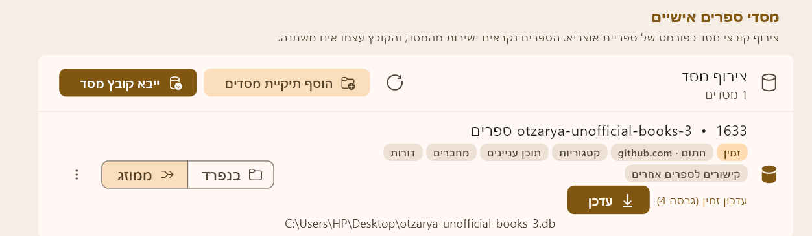
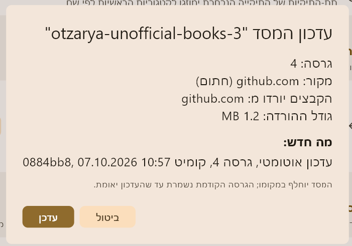
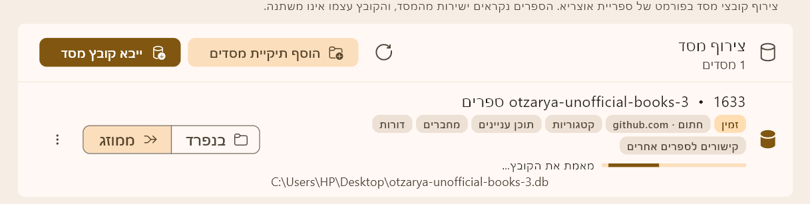
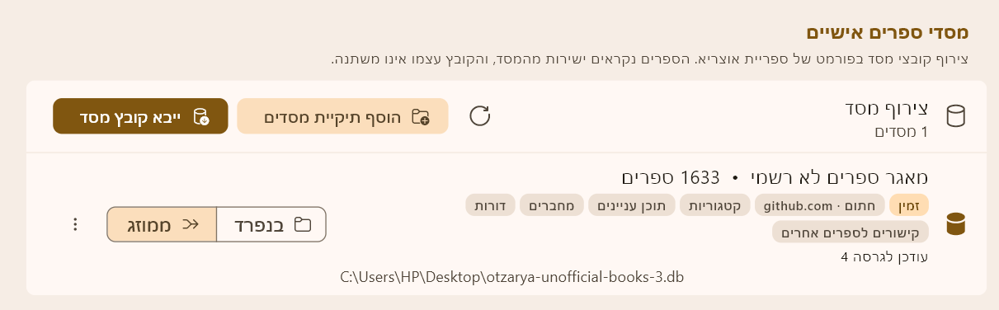

באוצריא היכנסו אל הגדרות ← ספרייה ← מסדי ספרים אישיים ולחצו "ייבא קובץ מסד", ובחרו את הקובץ otzarya-unofficial-books.db מהתיקייה.
המסד יצורף וייפתח חלון "המסד צורף". הוא יוצג כ-"חתום · github.com". חלופה: "הוסף תיקיית מסדים" ובחירת התיקייה. אוצריא מצרפת כל קובץ .db שבה.
תיקיית המסדים:לא נבחרה
אם המסד כבר מצורף באוצריא: אין צורך להוריד שוב. העדכונים מגיעים דרך אוצריא. הורדה חוזרת אל אותה תיקייה כותבת על הקובץ שבשימוש ועלולה להיכשל; אם בכל זאת צריך, הורידו לתיקייה אחרת.
מוריד...0:00
אין אחוזי התקדמות להורדה הזו. אפשר להמשיך להשתמש באוצריא; אל תסגרו את התוסף עד הסיום.
מעדיפים קבצי TXT?הורדת ספרים בודדים או תיקיות, עדכון שינויים וקבצי קישורים, לפי התצוגה הקודמת של התוסף.
עזרה והסבר
מהו המסד ומה בתוכו
המסד "מאגר ספרים לא רשמי" הוא קובץ אחד (otzarya-unofficial-books.db) שאוצריא פותחת כמו ספרייה. הוא כולל:
ספרים – כל ספרי המאגר, מוכנים לקריאה באוצריא.
קישורים לספרייה הרשמית – מפרשים ומראי מקומות בין ספרי המאגר לספרי אוצריא.
דורות – שיוך כל ספר לדור שלו.
בזכות זה אין צורך לחבר ולטעון קבצי קישורים ודורות ידנית, כמו בהורדת TXT. את העדכונים אוצריא מביאה בעצמה.
צירוף המסד בפעם הראשונה
אם המסד כבר מצורף באוצריא: אין צורך להוריד שוב. העדכונים מגיעים דרך אוצריא. הורדה חוזרת אל אותה תיקייה כותבת ישירות על הקובץ שבשימוש; היא עלולה להיכשל, או להשאיר קובץ חלקי בתיקייה שאוצריא סורקת. אם בכל זאת צריך, הורידו לתיקייה אחרת.
לפני הכול: הורדת הקובץ
בחלון המסד לחצו "בחר תיקייה" ובחרו תיקייה לשמירת הקובץ, ואז לחצו "הורד את המסד". הקובץ יישמר בתיקייה בשם otzarya-unofficial-books.db. אל תשנו את שמו.
שלב 1: ייבוא קובץ מסד באוצריא
באוצריא היכנסו אל הגדרות ← ספרייה, אל הכרטיס "מסדי ספרים אישיים", ולחצו "ייבא קובץ מסד". זו הדרך העיקרית.
אפשר גם ללחוץ "הוסף תיקיית מסדים" ולבחור את התיקייה שהורדתם אליה. אוצריא מצרפת כל קובץ .db שבה.

תמונה תתווסף (הגדרות ← ספרייה ← מסדי ספרים אישיים)
אוצריא תציג את ההודעה "המסד צורף": העדכונים שלו חתומים ויגיעו מ-github.com. אוצריא תבדוק שם עדכונים כשבדיקת עדכוני הספרייה פעילה, ולא תתקין דבר בלי אישור. לחצו "הבנתי".

תמונה תתווסף (הודעת "המסד צורף")
שלב 4: בדיקה ובחירת מצב תצוגה
המסד מופיע בכרטיס משלו בשם "מאגר ספרים לא רשמי", עם התגיות "חתום · github.com", קטגוריות, תוכן עניינים, מחברים, דורות וקישורים לספרים אחרים. מתחת לכותרת מוצגים הסטטוס "המסד מעודכן" והכפתור "בדוק עדכונים".
בכרטיס יש בורר בין שני מצבים. הוא קובע איפה הספרים מוצגים בעץ הספרייה:
בנפרד: הספרים מוצגים בנפרד, תחת "ספרים אישיים".
ממוזג: הספרים משולבים בקטגוריות הקיימות בספרייה.

תמונה תתווסף (כרטיס המסד, מצב "בנפרד")
מצב "בנפרד"

תמונה תתווסף (כרטיס המסד, מצב "ממוזג")
מצב "ממוזג"
עדכונים
אחרי הצירוף הראשון אין צורך להוריד שוב דרך התוסף. העדכונים מגיעים דרך אוצריא, בהסכמתכם:
מתי אוצריא בודקת
אוצריא בודקת עדכונים לבד, בעליית התוכנה, רק כשכל אלה מתקיימים בהגדרות (הגדרות ← מערכת):
"סינכרון ומצב רשת" במצב "מקוון".
"עדכוני תוכנה וספרים" מופעל.
"סינכרון הספרייה באופן אוטומטי" מופעל.
התדירות נקבעת ב"תדירות בדיקת עדכונים" (בכל הפעלה, פעם ביום או פעם בשבוע).
אפשר גם ללחוץ בכל זמן על "בדוק עדכונים" בכרטיס המסד. הבדיקה הידנית עדיין מכבדת מצב "מנותק" וכיבוי של "עדכוני תוכנה וספרים".

תמונה תתווסף (הגדרות ← מערכת: עדכוני תוכנה וספרים)
איך זה עובד
כשאוצריא בודקת עדכוני ספרייה, היא בודקת גם את המניפסט החתום ב-GitHub.
אם יש גרסה חדשה היא מודיעה על "עדכון זמין (גרסה N)" ומציגה בכרטיס המסד כפתור "עדכן". היא לא מורידה דבר בעצמה.

תמונה תתווסף (עדכון זמין, גרסה N, וכפתור "עדכן")
לחיצה על "עדכן" פותחת דיאלוג אישור ובו הגרסה, המקור (github.com, חתום), גודל ההורדה ומה חדש, וההודעה שהמסד יוחלף במקומו והגרסה הקודמת נשמרת עד שהעדכון יאומת. רק אחרי שתאשרו אוצריא מורידה ומתקינה, ולא תתקין דבר בלי אישורכם.

תמונה תתווסף (דיאלוג אישור העדכון)
בדרך כלל יורד רק תיקון קטן (דלתא) ולא כל המסד.
אוצריא מאמתת את החתימה (בכרטיס מוצג "מאמת את הקובץ...") ומחליפה את הקובץ במקומו. במהלך העדכון נוצר גיבוי זמני של הקובץ הקודם, והוא נמחק אחרי שהקובץ החדש אומת. רק אם העדכון קרס או נכשל, הגיבוי (סיומת .bak-update) משוחזר אוטומטית בהפעלה הבאה של אוצריא.

תמונה תתווסף (מאמת את הקובץ...)
בסיום מוצג "עודכן לגרסה N".

תמונה תתווסף (עודכן לגרסה N)
אם משהו נכשל
ההורדה נכשלה או נעצרה: לחצו "הורד את המסד" שוב. לרוב ההורדה ממשיכה מהנקודה שבה נעצרה. אם נשאר קובץ חלקי, מחקו אותו לפני שתייבאו.
הודעה ש-GitHub הגביל את הבקשות: המתינו כמה דקות ונסו שוב.
הודעה על רשימת ההיתר או על אין חיבור: בדקו חיבור לאינטרנט. סינון אינטרנט עלול לחסום את github.com.
הבחירה בתיקייה נדחתה: בחרו תיקייה אחרת, מחוץ לתיקיית אוצריא ולתיקיות המערכת.
המסד לא מופיע באוצריא: ודאו שייבאתם את הקובץ otzarya-unofficial-books.db מהתיקייה שהורדתם אליה (או שהוספתם את התיקייה שלו), ושהוא מופיע בכרטיס "מסדי ספרים אישיים".
הספרים לא נראים במקום שציפיתם: בכרטיס המסד בחרו בין "בנפרד" (תחת "ספרים אישיים") לבין "ממוזג" (בקטגוריות הקיימות).
העדכון נכשל: אם העדכון קרס, הגיבוי הזמני (.bak-update) משוחזר אוטומטית בהפעלה הבאה של אוצריא. אפשר ללחוץ "בדוק עדכונים" בכרטיס ולנסות שוב.
לא מצליחים בכלל: אפשר להשתמש בהורדת TXT, בכפתור "הורדת ספרים כקבצי TXT" בחלון המסד.
הורדת מאגר ספרים
המאגר המלא — כל הספרים
0%
פריטים שנכשלו — לחץ "הורד ידנית" להורדה דרך הדפדפן:
הורדה ישירה לא נתמכת — הועתק ללוח
הדבק בדפדפן כדי להוריד את ""
טוען רשימה...
מומלץ להוריד את המסד
המסד "מאגר ספרים לא רשמי" כולל את כל הספרים, ובנוסף:
הקישורים והדורות כבר בפנים, ואין צורך לחבר ולטעון אותם ידנית.
העדכונים מגיעים דרך אוצריא: היא מודיעה על עדכון זמין, ומתקינה רק אחרי אישורכם.